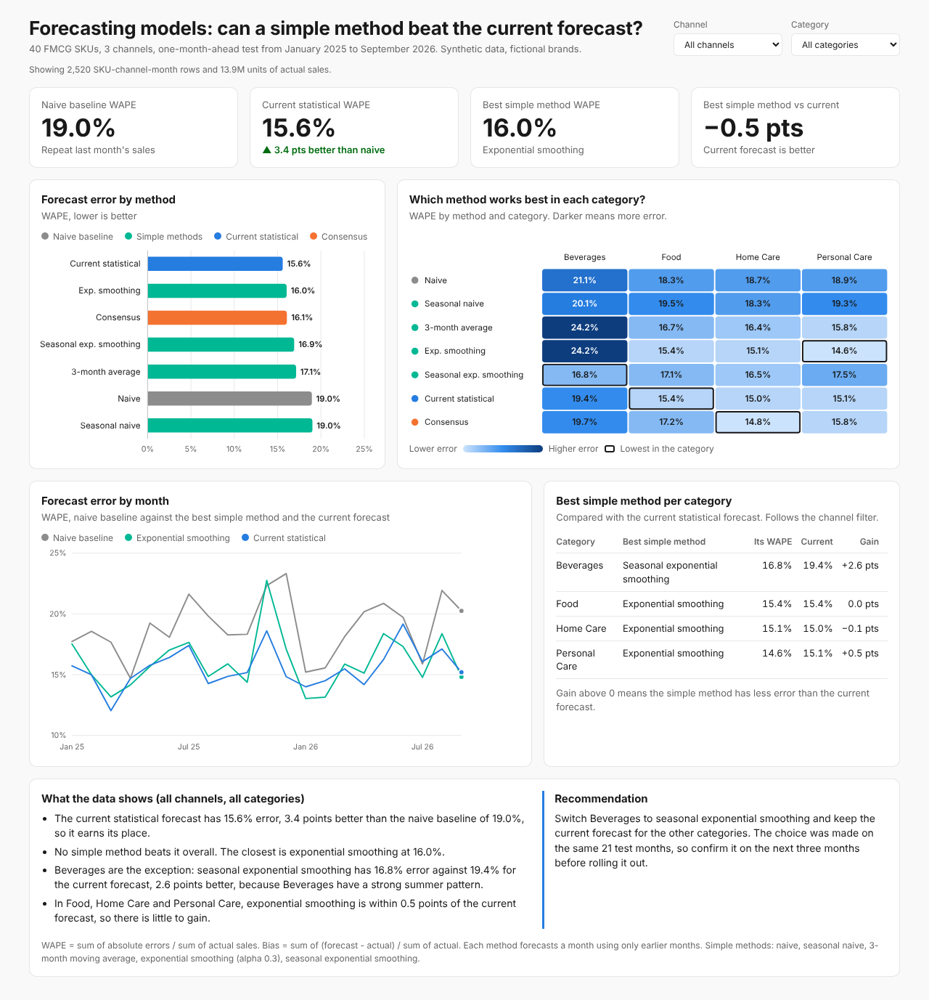

Forecasting models
Can a simple forecasting method beat the forecast the planners use today? An FMCG case study with synthetic data.
- Tools
- Python (pandas), Excel, interactive dashboard built with Claude
- Data
- 40 SKUs, 3 channels, monthly, 2023 to 2026. Synthetic, fictional brands.
Problem statement
A fictional FMCG company forecasts demand for 40 products in four categories through three channels. The planners start from a statistical forecast, which blends the recent average with the same month last year. Management wants to know whether that forecast is worth its complexity, or whether a simpler method would do as well or better.
The questions to answer:
- Does the current forecast beat a naive baseline that simply repeats last month's sales?
- Does any simple alternative method beat the current forecast, overall or in a single category?
- Which method should each category use?
Our approach
-
Load the data
Read
demand_monthly.csv(5,400 rows: one per SKU, channel and month, April 2023 to December 2026) and the product masterproducts.csv. Each row holds actual sales plus the current statistical forecast and the planner consensus forecast. -
Clean and check
Checked for duplicate keys, missing forecasts, negative values and SKUs missing from the product master: none found. Removed the 360 rows for October to December 2026, which have no actual sales yet, leaving 5,040 rows. The test starts in January 2025, because the seasonal methods need at least 12 months of history. That gives 2,520 test rows: 120 SKU-channel series over 21 months.
-
Build the forecasting methods
Wrote five simple methods in Python. Each one forecasts a month using only the months before it, so nothing from the future leaks in. The current statistical and consensus forecasts are taken from the data for comparison.
Method How it forecasts next month Naive Same as last month Seasonal naive Same as the same month last year 3-month moving average Average of the last 3 months Exponential smoothing Weighted average that favours recent months (alpha 0.3) Seasonal exponential smoothing Remove the yearly pattern, smooth, put the pattern back -
Create the KPIs
Calculated WAPE (total absolute error divided by total actual sales) and bias for every method, overall and by category. Forecast value add against the naive baseline is the naive WAPE minus the method's WAPE, so above zero means better than repeating last month. For each category, the best simple method is compared with the current forecast.
-
Validate in Excel
Rebuilt every WAPE and bias figure in an Excel workbook with live formulas on the same data (93 formulas, no errors). The Excel results match the Python results exactly.
-
Build the dashboard
One page that answers the three questions: four KPI tiles, error by method, a heatmap of method against category, error by month, and the best simple method per category. Channel and category filters recalculate every number.
Result
- Naive baseline WAPE
- 19.0%
- Current statistical WAPE
- 15.6%
- Best simple method, overall
- 16.0%
- Seasonal smoothing gain in Beverages
- +2.6 pts
Open the interactive dashboard, with channel and category filters, or download it as a PDF.

What the data shows
- The current statistical forecast earns its place. Its error is 15.6% against 19.0% for the naive baseline, 3.4 points better.
- No simple method beats it overall. The closest is exponential smoothing at 16.0%.
- Beverages are the exception. Seasonal exponential smoothing has 16.8% error against 19.4% for the current forecast, because Beverages have a strong summer pattern that the other methods miss.
- In Food, Home Care and Personal Care the best simple method is within 0.5 points of the current forecast, so switching would gain little.
| Method | WAPE | Bias | Value add vs naive |
|---|---|---|---|
| Current statistical forecast | 15.6% | −3.5% | +3.4 pts |
| Exponential smoothing | 16.0% | −1.6% | +2.9 pts |
| Consensus (planner adjusted) | 16.1% | −1.6% | +2.9 pts |
| Seasonal exponential smoothing | 16.9% | −4.4% | +2.0 pts |
| 3-month moving average | 17.1% | −0.9% | +1.8 pts |
| Naive (last month) | 19.0% | −0.6% | 0.0 pts |
| Seasonal naive | 19.0% | −5.9% | −0.1 pts |
Recommendation
Switch Beverages to seasonal exponential smoothing and keep the current forecast for the other categories.
Limitations
The best method per category was chosen on the same 21 test months, so it should be confirmed on the next three months before it is rolled out. The test period starts in January 2025, so the current forecast shows 15.6% here against 15.8% in the forecast accuracy project, which scores from January 2024.